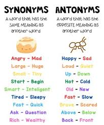
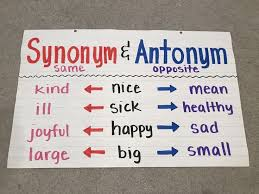
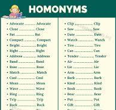
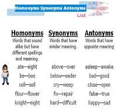
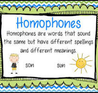
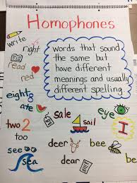
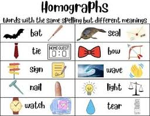
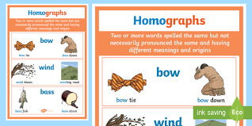

🦎 Week 24 of 35 — Unit 5: Existing, Endangered, Extinct
Unit 5: The Natural World (Existing, Endangered, Extinct) | Dates: Feb 28 – Mar 4, 2027 | Week: 3 of 4 | Year week: 24 of 35 |
Class | Sunday | Monday | Tuesday | Wednesday | Thursday |
This week's updates / notes: | G4-G5 Iftar | ||||
Morning Meeting | Week #16 SEL Lesson - Click Here. Objective for this week is: Working Together 5A- Individual Activity to Whole Group Meeting 5B- One to One Enrichment 5C- Morning Practice | Week #16 SEL Lesson - Click Here. Objective for this week is: Working Together 5A- Individual Activity to Whole Group Meeting 5B- One to One Enrichment 5C- Morning Practice | Week #16 SEL Lesson - Click Here. Objective for this week is: Working Together 5A- Individual Activity to Whole Group Meeting 5B- One to One Enrichment 5C- Morning Practice | Week #16 SEL Lesson - Click Here. Objective for this week is: Working Together 5A- Individual Activity to Whole Group Meeting 5B- One to One Enrichment 5C- Morning Practice | Week #16 SEL Lesson - Click Here. Objective for this week is: Working Together 5A- Individual Activity to Whole Group Meeting 5B- One to One Enrichment 5C- Morning Practice |
Vocabulary & Spelling — Word of the Day (G5 + G3) Routine: give the definition first (no guessing) → students share where they might use it, similar/different words. Morphology, examples/non-examples, synonyms/antonyms & more on the vocabulary cards: Vocabulary Padlet (incl. Spelling: words Mon · test Thu) | G5: proverb — A short, well-known saying that expresses a general truth or piece of advice. G3: rehearse — To practice a performance, speech, or piece of music before presenting it. Unit: legacy — Something handed down from the past; a lasting impact or contribution. | G5: idiom — A phrase whose meaning cannot be understood from the individual words alone. G3: chorus — A group of singers who perform together, or the repeated part of a song. Unit: cheered — Shouted for joy or in order to encourage someone. ——— Spelling — introduce Week 24 lists (practice all week). Low (Building Spelling Skills, List 24): why, try, trying, eat, mean, read, sunny, fly, treat, each High (Building Spelling Skills, List 24): action, fiction, mission, divide, division, attend, attention, pollute, pollution, express, expression, educate, education, music, musician, magic, magician, physician | G5: allusion — A brief, indirect reference to a person, place, event, or work of literature. G3: lyric — The words of a song. Unit: environment — The surroundings or conditions in which people live. | G5: inference — A conclusion reached by reasoning from evidence and clues rather than direct statements. G3: theatrical — Relating to the theater or dramatic performances, or exaggerated and dramatic in manner. Unit: portray — To describe or show someone or something in a particular way. | G5: analogy — A comparison between two things to explain or clarify an idea. G3: dramatic — Relating to drama or the theater; striking in appearance or effect. Unit: camouflage — Colors or patterns that help an animal blend in and hide. ——— Spelling test — Week 24 lists (Low: List 24 · High: List 24). |
READING | Guided Reading — Warm-Up: The teacher will begin the lesson by briefly reviewing the reading and comprehension skills that were learned in previous classes. This may include identifying characters, setting, plot, and understanding the sequence of events in a story. Practice: Reading and comprehension activity — the teacher will provide each group of students with a text that is appropriate for their reading level (short story, chapter from a book, poem, or informational text). Students read the text in their groups, discussing the characters, setting, plot, and main ideas. The teacher circulates, offering support and guidance as needed. Wrap Up: The teacher will summarize the main points of the lesson, reinforcing the importance of reading comprehension and summarizing as essential skills for understanding a text. Rotations: SeeSaw — Synonyms · Photos with Synonyms · Color Ant/Syn · Synonyms/Antonyms · Synonym/Antonym · Synonym/Antonym IXL: G3 Antonyms · G4 Antonyms · G5 Antonyms · G3 Synonyms · G4 Synonyms · G5 Synonyms Google Classroom/Worksheets, Boom Cards, RazKids, EPIC, Book Bag. | Guided Reading: Comprehension Printables (I do/We do/You do) The teacher and students will practice reading comprehension strategies within small groups or as a whole group, identifying skills that help understanding of text: Before Reading: Activating Prior Knowledge, Predicting, Previewing the Text, Setting a Purpose for Reading. During Reading: Asking Questions, Visualizing, Making Connections, Summarizing, Using Context Clues, Making Inferences, Rereading for Clarity, Identifying Main Idea and Supporting Details, Monitoring Comprehension. After Reading: Summarizing and Retelling, Drawing Conclusions, Answering Comprehension Questions, Discussing and Sharing, Making Connections to Real Life, Creating a Graphic Organizer, Writing a Response. | Guided Reading: Review Previous Lesson. | Guided Reading: Review/Catch-up. Rotations: See Sunday's Options. | |
GRAMMAR (Sun & Tue) WRITING (Mon & Wed) Thu = catch-up IXL this week: Low: Use conjunctions (G1) High: Create compound sentences (G3) Stretch: Create compound sentences (G4) · Create compound sentences (G5) | Grammar (Sun) — Combining Sentences — Subjects & Verbs OBJ: Combine sentences with shared subjects or verbs Packets — Low (K-1): K: Review: Sentences (oral combining), G1: L1.10 Combining Sentences · Mid (2-3): G2: L1.11 Combining Sentences — Nouns, G2: L1.12 Combining Sentences — Verbs, G3: L1.15 Combining — Subjects and Objects, G3: L1.16 Combining — Verbs · High (4-6): G4: L1.19 Combining — Subjects and Direct Objects, G4: L1.20 Combining — Verbs, G5: L1.28 Combining Sentences, G6: L1.31 Combining Sentences Conservation writing uses combining constantly. Grammar anchor charts / resources (from the 2025-26 plan): Homonyms- https://jr.brainpop.com/topic/homonyms/   | Writing — Haiku: 3 lines, 5-7-5 syllables Watch Haiku Poetry for Kids (Padlet Week 4) and the haiku section of BrainPOP Jr: Poems; model clapping syllables, then co-build one class haiku about a shared nature topic, checking 5-7-5. Grammar link: nouns and adjectives — the fewest, best words. TWR: haiku is a key-word form — jot 3 nature key words, clap the syllables of each jot FIRST, then build lines around the jots. IXL: How many syllables? (G1) — Sort by syllables (G2) — Stretch: Order adjectives (G4) — Choose the synonym (G5) | Grammar (Tue) — Combining Sentences — Adjectives & Objects OBJ: Combine sentences by moving adjectives and objects Packets — Low (K-1): K: Review: Adjectives (oral combining), G1: Review — Adjectives and Prepositions (teacher extends combining) · Mid (2-3): G2: L1.13 Combining Sentences — Adjectives, G2: Review: Combining Sentences, G3: L1.17 Combining Sentences — Adjectives, G3: Review: Combining Sentences · High (4-6): G4: L1.21 Combining Sentences — Adjectives, G4: Review: Combining Sentences, G5: L1.28 Combining Sentences (adjectives/objects focus), G6: L1.31 Combining Sentences (adjectives/modifiers focus) The tiger has stripes. Grammar anchor charts / resources (from the 2025-26 plan): Each group gets 3 homonyms (e.g., bark, wave, ring). They write two definitions & draw a picture for each meaning.     Mentor Text: Read a passage with homographs (e.g., from "Amelia Bedelia" books). Sorting Activity: Provide a list of words (e.g., “lead,” “tear,” “row”) and have students sort them based on different meanings.   | Writing — Write one or two haiku about nature Students pick a nature theme and draft their own haiku, clapping each line before writing it down; partners check each other's syllable counts. TWR: word-swap within the syllable budget — trade a weak word for a precise one with the same count ("big" to "vast", "nice" to "bright"); thesaurus + clap check together. Differentiation: Low/Med word bank of pre-counted nature words (sun-set = 2, oc-ean = 2); High writes a second haiku on a new theme. Resources: Writing a Haiku Poem worksheet (Padlet Week 4: Haiku Poems) — Ocean Haiku Poem template with word bank (Padlet Week 4: Haiku Poems) | Catch-up day — reteach or extend this week's grammar and writing; finish unfinished drafts; assign this week's IXL practice (links in the left column: Low = reteach, High = consolidate, Stretch = extension). |
MATH Pacing W23 · B8 Decimals W22–W25 | |||||
Differentiation | Each lesson includes opportunities for partner practice, common misperceptions, independent practice, and a challenge questions for differentiation. | Each lesson includes opportunities for partner practice, common misperceptions, independent practice, and a challenge questions for differentiation. | Each lesson includes opportunities for partner practice, common misperceptions, independent practice, and a challenge questions for differentiation. | Each lesson includes opportunities for partner practice, common misperceptions, independent practice, and a challenge questions for differentiation. | Each lesson includes opportunities for partner practice, common misperceptions, independent practice, and a challenge questions for differentiation. |
EXPLORER 3-day plan (Mon–Wed) Extinct & How We Help IXL this week: Low: Introduction to Fossils (Gr 3) · High: Identify and Classify Fossils (Gr 4) · Extra: Protect Sea Turtles — Science Literacy (Gr 4) Stretch: Compare Fossils to Modern Organisms (Gr 5) · Evidence from Fossils in Rock Layers (Gr 5) | Review / catch-up — revisit last week's Explorer learning; finish unfinished investigations or SeeSaw posts; preview this week's topic. | Mon · Hook + Investigate ▶ Hook video: ‘What Happened to the Dinosaurs?’ — CBC Kids (real footage, ~2.5 min) Vocab: extinct, fossil, evidence, cause. Investigate: what is extinction and what causes it? How do we know about extinct animals (fossils / evidence)? Epic read: Save the Planet: Helping Endangered Animals (Epic) Objective: Explain what extinction means and how fossils give evidence about extinct animals. Assessment: Name an extinct animal and explain one piece of evidence (fossil) that tells us it existed. Reading (Gr 2-3): 'Gone Forever: The Dodo' (Grade 2-3 Readings Pack) · Readings Pack — ADD PADLET LINK Differentiation: Name the animal with picture support / name the animal and one piece of evidence with support / name the animal, the evidence, and explain independently. | Tue · Apply + Record Timeline (existing → endangered → extinct): place animals on a line; what tips an animal from one to the next? Printable: Twinkl — Extinct Animal Fact File to add detail to two timeline animals. Objective: Place animals on a existing-endangered-extinct timeline and explain what tips an animal from one stage to the next. Assessment: Place at least one animal correctly on the timeline and explain one reason it moved from one stage to the next. Differentiation: Place with picture cues and adult support / place independently with a word bank / place and explain the reason independently. | Wed · Review + Check Review — How can we help? conservation actions; quick check. → into the diorama. Reading (Gr 2-3): 'Bring Back the Oryx' (Grade 2-3 Readings Pack) · Readings Pack — ADD PADLET LINK Objective: Identify conservation actions that help protect existing and endangered animals. Assessment: Name one action people can take to help protect an animal and connect it to the diorama project. Differentiation: Name an action with picture/word support / name an action with some support / name and explain how the action helps independently. | Review / catch-up — consolidate Mon–Wed learning; complete recordings/reflections; reteach or extend as needed. |